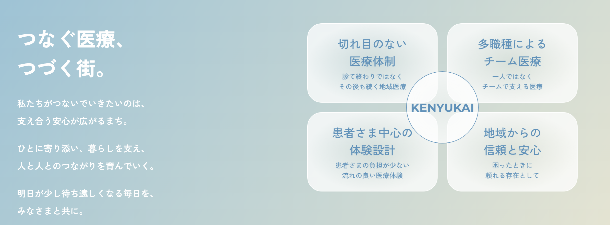
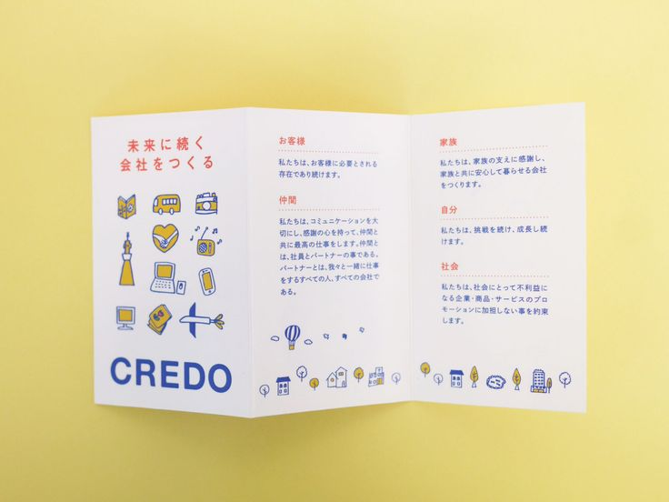
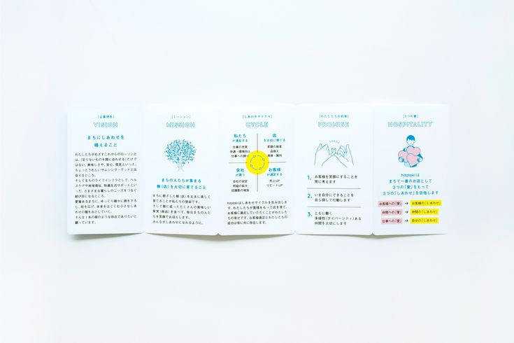
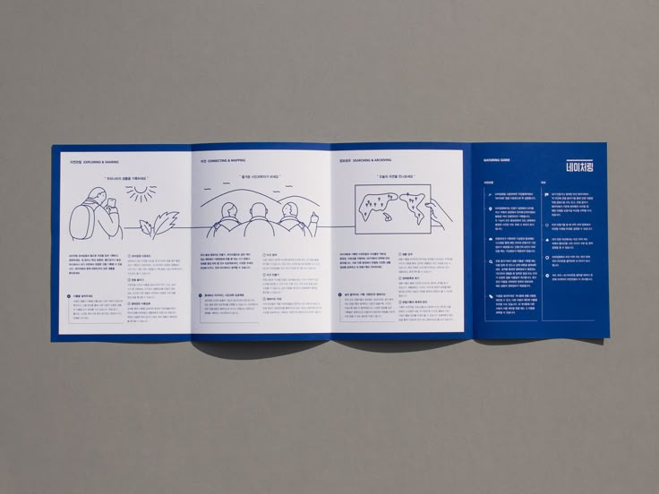

行動計画への落とし込み・説明会の実施・クレドカードの作成と配布 全3軸での推進計画
スローガン「つなぐ医療、つづく街。」に連なる4つの行動指針として再構成。2つの方針で言葉を見直しました。

クレドカード（Credo Card）とは、企業・団体の理念・行動指針を名刺サイズの1枚にまとめ、職員全員が携帯するカードです。日々の行動判断の基準として浸透させ、組織文化を醸成する役割を担います。



| 決裁者 院長・事務・ 編集メンバー |
行動指針変更案レビュー・承認：編集室メンバー1h
クレドカード文化浸透計画の承認：事務メンバー1h
院長への個別説明・承認：院長1h
|
説明会への参加・質疑応答2h
|
デザイン最終承認1h
入職時配布フロー確認1h
|
| TNA 制作 |
行動指針テキストFB・提案2h |
（説明会はFCC・決裁者主導） |
クレドカードデザイン制作8h
修正対応（2回想定）3h
印刷データ入稿・納品確認2h
|
| FCC ディレクター |
行動指針テキスト整理・変更案作成3h
院長・事務への事前説明資料作成2h
TNA相談アジェンダ・準備1h
|
説明会資料・進行台本作成4h
説明会ファシリテーション（1回）2h
フィードバック収集・意見集約1h
FB収集・内容への反映2h
|
TNAへのデザインディレクション2h
デザイン校正・修正指示2h
配布フロー設計・実施管理2h
|
| ステップ別 合計工数 |
決裁3h
TNA2h
FCC6h
|
決裁2h
TNA—
FCC9h
|
決裁2h
TNA13h
FCC6h
|